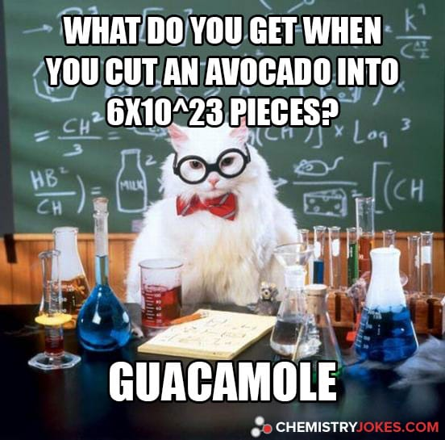

door Jolanda Meima, Ward van der Spijk, Stijn Sannen en Mike Kuijper
Wat is doorstralen?
Doorstralen is een conserveringsmethode waarbij straling wordt gebruikt om de organismen op voedsel te doden. Dit wordt gedaan door een grote stralingsbron dicht bij het voedsel te plaatsen.
Meestal is dit Kobalt-60.
⁶⁰Co
De radioactieve stof die het meest wordt gebruikt voor het doorstralen van voedsel is de isotoop Kobalt-60 (⁶⁰Co). Deze isotoop vervalt via bètaverval tot de (stabiele) isotoop Nikkel-60 (⁶⁰Ni). Kobalt-60 zendt ook twee soorten
gammastraling uit, γ₁ en γ₂. De energie van die straling wordt uitgedrukt in Elektronvolt. Deze eenheid gebruikt men in de deeltjesfysica. 1 Elektronvolt is de energieverandering die een vrij deeltje ondervindt wanneer het in een
elektrisch veld een weg aflegt tussen twee punten die een potentiaalverschil hebben van 1 volt. 1 Elektronvolt is gelijk aan ongeveer 1,6 x 10⁻19 Joule. Γ₁ heeft een energie van 1,33 MeV, γ₂ heeft een energie van 1,17 MeV. Een Kobalt-60
bron is dus erg sterk. De halveringstijd van Kobalt-60 is ongeveer 5,27 jaar.
Kobalt-60 wordt ook gebruikt in de geneeskunde en in de industrie als algemene bron van gammastraling.
Hoe gaat doorstralen precies in zijn werk?
Het is belangrijk dat het doorstralen van voedsel goed gebeurt. Daarom zijn daar speciale gebouwen voor. Hoewel de precieze ontwerpen verschillen, hebben de gebouwen wel een aantal overeenkomsten.
Zo hebben de gebouwen allemaal dikke (betonnen) muren, om de omgeving zo veel mogelijk te beschermen tegen de straling. Ook wordt het radioactieve materiaal dat gebruikt wordt om door te stralen bij bijna alle gebouwen onder de grond
bewaard, in een groot waterbad.
De te bestralen goederen komen binnen en worden op een lopende band gelegd. Dan gaan ze door het gebouw en worden ze (met de verpakking er nog omheen) onder de stralingsbron gelegd. De tijd (en daarmee de dosis ) varieert per product. Als
de producten klaar
zijn, gaan ze verder over de lopende band naar de uitgang van het gebouw, waar ze worden ingeladen door het bedrijf.
Kobalt-60 zendt bèta- en gammastraling uit. De bètastraling die wordt uitgezonden is niet sterk genoeg voor het doorstralen van voedsel, dus de gammastraling wordt gebruikt. Deze straling tast het DNA van micro-organismen in het
voedsel aan, en daardoor kunnen deze zich niet meer voortplanten. Hierdoor kan je het voedsel langer bewaren.
60 27Co
→ 60 28Ni
+ e− + ve + γ + 1.17 MeV
60 28Ni
→ 60 28Ni
+ γ + 1.33 MeV
Doorstralen is een van de meest effectieve manieren om voedsel te conserveren, omdat het erg veel micro-organismen aantast of doodt.
Waarom wordt avocado niet doorstraald?
Het is in Nederland verboden om voedsel door te stralen, tenzij er ontheffing voor het voedingsmiddel is. Hier is de Nederlandse Voedsel- en Warenautoriteit (NVWA) degene die toezicht houdt op doorstralen van voedsel. De NVWA houdt
overigens toezicht op alles wat te maken heeft
met eten, dierenwelzijn en natuurgebieden. Je mag niet al het voedsel bestralen, omdat dat ten eerste erg veel radioactief afval en dat soort gedoe geeft en omdat je erna niet meer kan zien of eten bedorven of verrot is, dus mogen fruit en
groente niet door de bestraler. Ook mogen bijna bedorven producten niet doorstraald worden. Daarbij kunnen niet alle voedingsmiddelen straling aan, avocado verandert bijvoorbeeld in guacamole.
Verschillende voedingsmiddelen mogen aan andere hoeveelheden straling blootgesteld worden. De dosis wordt gemeten in kGray. Dit varieert van 1 kGray op gedroogd fruit tot 75 kGray op steriel voedsel voor bijvoorbeeld
hiv-patiënten en mensen die behandeld zijn voor leukemie en daarom geen witte bloedcellen meer hebben. Lage doses worden gebruikt voor het doden van insecten, larven en insecteneieren en hoge doses zijn om bacteriën en virussen te doden.

Verschillende doses bij voedselbestraling
Het doorstralen van voedsel wordt uitgedrukt in de eenheid Gray.
Met 1 Gray meet je de absorptie van 1 Joule stralingsenergie door 1 kilogram materie.
Als een persoon een bestraling van 0.7 Gray oploopt, krijgt die persoon stralingsziekte. Dat houdt in dat je last krijgt van vermoeidheid, misselijkheid, braken en diarree.
Vanaf een lagere hoeveelheid dan 0.7 Gray kun je al last krijgen van haaruitval, beschadiging van huidcellen, longbeschadiging, oedeem, vernietiging van beenmerg.
Bij een bestraling van 2.5 – 3.5 Gray kun je 50% van onze bevolking laten overlijden.
Als je 10 Gray oploopt, is het bijna zeker dat je in een keer sterft.
Tussen de 20 en de 50 Gray wordt het centrale zenuwstelsel beschadigd.
Waarom bestralen we eigenlijk?
Zodat voedsel langer houdbaar blijft
Het gaat rijpen, kiemen en bederf tegen
Het doodt bacteriën, insecten, virussen
En het vermindert het effect van allergische reacties
Nadelen
Je kan het niet zien als een product bedorven is
Sommige producten veranderen van kleur en smaak
I.p.v. het testen van veiligheid gebeurt het op dieren en niet op mensen
Maximale gemiddelde dosis (kGy):
Product
Dosis
Gedroogde vruchten + graanvlokken
1
Garnalen
3
Eiproducten
6
Gedroogde kruiden
10
Diepgevroren maaltijden
75
Filmpje
Dit is een filmpje van het Ministerie van Volksgezondheid uit 1968 over voedselbestraling.